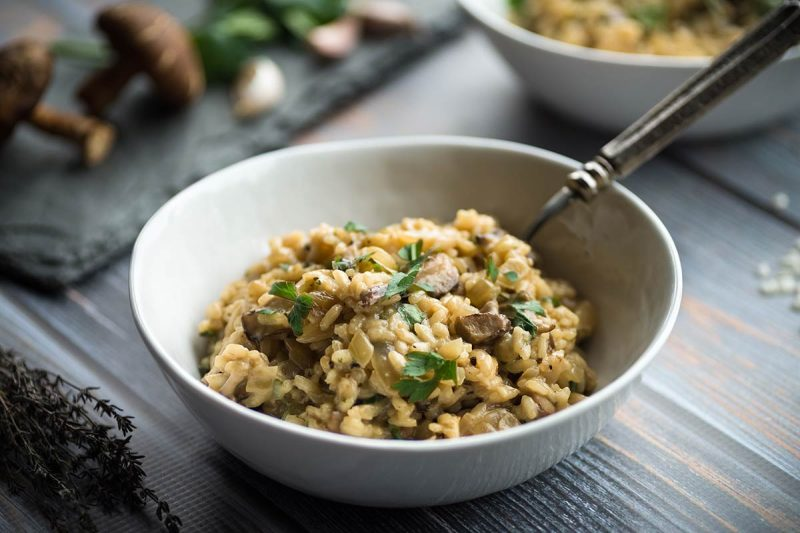
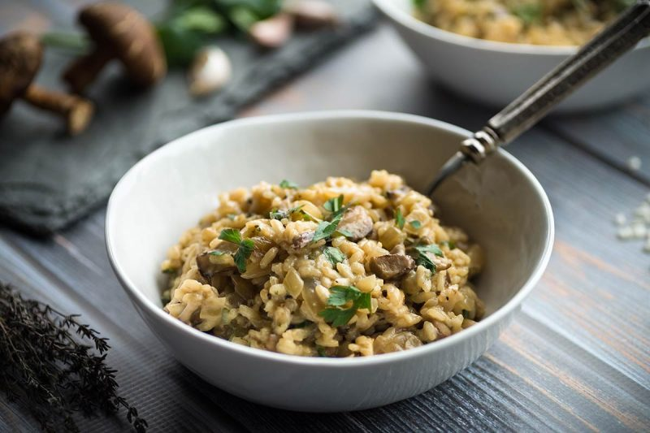

If someone asks you, why would you like to take a trip to Italy? Probably your first response would be to try the delicious cuisine including their infamous pizza. Italy is a beautiful country with breathtaking scenery and architecture, a rich culture, and an impressive history, but Italian cuisine is a source of national pride. Italy’s fragrant and fresh gastronomy is known and loved around the world. Complex and strong, but at the same time simple and subtle. This article delves into the top 10 traditional foods in Italy, which all have one thing in common: they all use Italian ingredients that are so flavorful that many other countries have adopted them as ingredients for their own local dishes like olive oil, oregano, and basil.
 
Pizza Pasta Risotto
Lasagna Focaccia